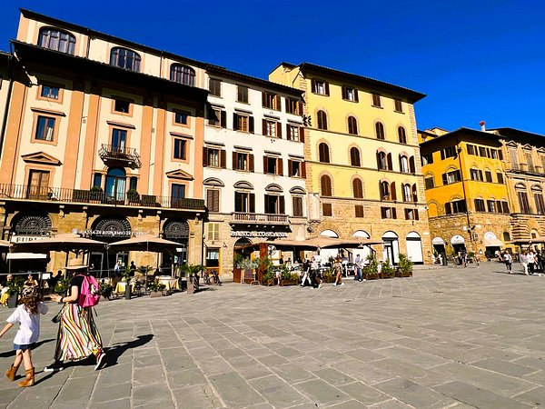
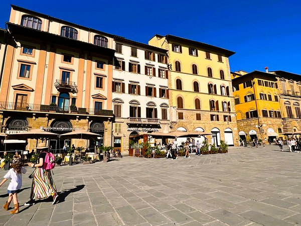

Um dos museus de arte mais importantes do mundo, a Galeria Uffizi abriga obras-primas de artistas como
Botticelli, Michelangelo e Leonardo da Vinci.
Mercado de San Lorenzo
Um mercado popular onde os visitantes podem encontrar produtos frescos, especiarias e artesanato local,
ideal para experimentar a culinária toscana.
Ponte Vecchio
Uma das pontes mais icônicas de Florença, a Ponte Vecchio é conhecida por suas lojas de joias e artesanato
que se alinham ao longo da estrutura.
Vesúvio
Apesar do nome ser associado ao famoso vulcão em Nápoles, em Florença "Vesúvio" pode referir-se a uma
variedade específica de vinho toscano produzido na região.
 
